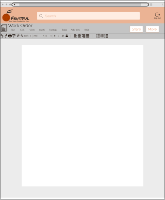
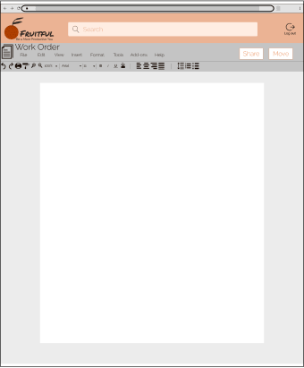

I was the UX/UI designer and frontend developer for the creation of Busy Bus, an app that allows users to see when their bus is arriving at the bus stop.
UX/UI Designer
Researcher/Analyst
Frontend Developer
High-fidelity mockup
prototype
Figma
Draw.io
Google Forms
HTML/CSS
github
terminal
atom
I was brought on to determine the features that users wanted in a simple transportation app. People were wasting time at the bus stop because they did not know when their bus was going to arrive.
The solution is an app that tells users what time their bus is going to arrive at a specific bus stop. The app also tells users the frequency so they can plan ahead.

Through my survey it became clear that real users were sitting at the bus stop longer than necessary becuase they didn't know when their bus was going arrive.
My analysis of market competetors Moovit and DC Metro showed that Busy Bus could be a niche app for the local market. It would not have all the travel features of Moovit but would be more user friendly than DC Metro.
I created user stories for Busy Bus to help determine the MVP. The high priority user stories included searching for a busses timing and seeing all the busses for my stop.
With the wireframe prototype, I had three in-person usability tests. Each user had two tasks that they needed to complete.
Task 1: Determine what time a certain bus would arrive
Task 2: Determine the frequency of a certain bus
The participants were able to complete each of the tasks sucessfully.


 

Overall, I think the project was a success. I worked with users to discover that they were looking for a platform that made staying organized and increasing their productivity easier. Every decision I made for the project was based on making things easier for the user so they can be more productive.
One thing that did not go well was I started out wanting the platform to include too many features. I had to make decisions to cut things so that the product was manageable. For example I wanted the platform to turn calendar items into to do list items but I decided to have the program create reminders instead.
Going into the project I doubted that I would be able to find an available market but I was able to find the productivity market and dig into that more.
I learned how much of an impact the user survey has on the project. It is really important to have the right questions and get enough responses. I was able to discover the productivity market through my survey and which features I should be focusing on.
If I had more time I would like to make the platform more intuitive. One feature I was able to make more intuitive was including the recent changes on the dashboard. This makes it easy for users to know whether the document they are waiting for someone else to do their part on, has been updated or not without having to constantly check it. Something I would add going forward would be the option to set a notification that allows users to be notified when the document is edited.